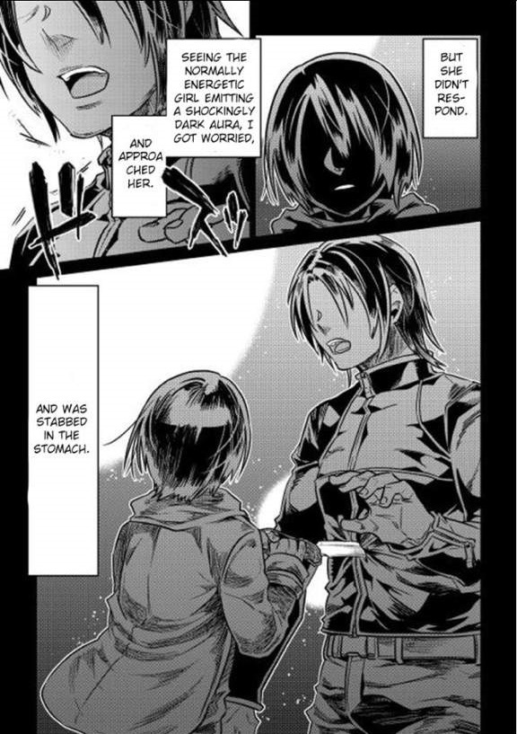

It seems that I was killed after being stabbed by the stalker who I considered to be like a younger sister, and somehow got reincarnated.
I wasn't joking when I said that I’ve been reincarnated. You could say that my current state of mind hasn’t settled down from all of the confusion, so I’d appreciate it if you would save your comments till after I finish my story. Otherwise I might get wild if you interrupt me. Ahem. Let me explain everything from the beginning…
Well, first let’s start with my name. I used to be called Tomokui Kanata. However, since I was reincarnated, let’s leave it as "Nameless" for now.
I have a bit of a lapse in memory here; but I remember that after a hard day of work, I was invited by my colleague to go drinking. I accepted her offer and we went tavern hopping.
Since the following day was a holiday, she drank until late in the night even though she is weak against alcohol. I ended up carrying her to my home since she couldn't even walk. She had fallen asleep and I didn’t want to wake her up, so I left her on the bed. My constitution and love of alcohol was much greater than hers; and at that time, I had an urge to drink while watching the full moon, or so I thought as I opened the fridge.
Then I realized that the bottom shelf that should’ve been stuffed with beer, chuhai, and all sorts of drinks was empty.
Yesterday, I finished all of my drinks and planned to go restock it today if it wasn't for my colleague’s invitation earlier.
And I completely forgot about it.
That’s right it was the biggest failure in my life to have finished drinking the stocks yesterday.
If only I had saved at least one.
I–no, no… let’s hasten the explanation a bit first.
I, who wanted to drink alcohol by all means, went to a nearby convenience store which was open twenty-four hours a day. I bought five beers, and headed home.
Summer was approaching, yet the night was still chilly. The full moon suspended in the clear night sky was very beautiful.
The clouds, which were slightly concealing the moon, were also pleasant. Indeed, drinking alcohol with the silver moon shining overhead would make it even more delicious.
While thinking about the alcohol, I noticed that under a street-light there was a pretty girl. Her face was familiar for me, she’s what the general public would refer to as a "stalker". My stalker is called Kirimine Aoi, an active female college student. She’s twenty years old, five years younger than me.
Briefly talking, our relationship is the following, when I was in my third year of high school I saw a couple of around 15 years old delinquents harassing a girl — the person whom I would soon know as Aoi - , she was about twelve or thirteen years old at that time, and I saved her, and that's how our bond formed.
Well, while it isn't wrong to say that I saved her, I’m not sure if that’s the correct thing to say.
Compared to how I am now, I used to be a cowardly chicken, and there was no way I could save a complete stranger from an obviously dangerous group.
Altough their actions were deplorable, the surrounding people turned a blind eye to it.
Even though the delinquents were younger than me I was inexperienced in fighting at that time and my ESPer ability hadn’t yet awoken, so normally I would've just ran away quickly like always.
However, either by fortune or misfortune which is more likely, I've received a military stun nightstick as a birthday present from my uncle recently, a weapons enthusiast. He worked for a small to medium-sized corporation that had military relations, so it was relatively easy for him to get it for me. The company he worked for was one of many others under the influence of one major company, « Avalon Co, Ltd ».
Avalon, the company that made my nightstick, spread its name throughout the universe as a famous weapon corporation.
I was curious about the nightstick's power but I didn't have the courage to test it out. So it was adorned in my room without being used till now. As for the reason why I was carrying such a dangerous object at this time, that's because a friend of my uncle who is a weapon enthusiast just like him said he wanted to look at the nightstick. Soon after, he sent an email telling me that he was on his way to see it.
The message included a location where we could meet, so I brought the nightstick with me and decided to walk to it.
Which brought me to this situation.
Eventually I used the military nightstick on the delinquents. They didn't notice me, and I had a justified reason which is "saving the girl from the delinquents", I can still remember how I tested the nightstick on them with such light feelings.
I bashed the delinquents from behind, and after a few hits they were sprawling on the ground, foaming and twitching violently which I thought really disturbing at that time. Nevertheless, I quickly took the hand of the panicking girl, and ran away.
I was really young in those days. Because of my curiosity and the convenient situation, I made those delinquents my experimental subjects and saved Aoi while i'm at it.
After that incident, with the passing of time Aoi's affection towards me slowly grew. It was only a matter of time, but Aoi eventually became my stalker.
It wasn’t a very severe stalking till I started working at my current place of work, where she continued chasing me. She even followed me to other planets, where I would occasionally be sent on business trips.
I would like it if she just faced me normally instead of following me stealthily around, and I really want to say to her not to infringe upon my private life.
Well, it's enough to know this much about this topic. I might explain more details about it in the future, but for now leave it aside.
Anyway, after buying the alcohol, I met Aoi on my way home. Rather it would be more accurate to say that I happened to encounter her. She was standing under the light of the street-lamp while looking down, and was emanating a black aura unlike her usual cheerful puppy-like self; so I could only respond by tilting my head in confusion.
Aoi, even as a stalker, was an existence akin to a younger sister for me; because of that, I was able to notice the weird atmosphere around her at that time, so I called out to her out of worry.
There was no reply and Aoi's face remained downcast.
At that moment, I felt a great sense of uneasiness that couldn’t be expressed. Yet even so, I still approached her so that I could learn why she is acting like this. Then I got stabbed in my abdomen with a sheath knife.
I could feel the severe pain that came from the blade that was being rotated which aimed at gouging out my internal organs, but I had a strong body and an injury of this degree wouldn't even leave a scratch after receiving a regenerative treatment.
If the sheath knife used was made from a lump of ordinary metal there was no way I would have died, but what Aoi used was the [Nenekaruri]; a [B]-Ranked sheath knife with a thunderbolt generating property created by « Sakuma Heavy Industries, Ltd ». Ironically, it was one of the goods sold by the company my uncle worked at.
Simply put, it’s a single molecular cutter with the abilities of a high voltage taser and other weapons. It’s a close proximity weapon that increases in sharpness when the thousands of tiny blades installed on its blade start to spin like a chainsaw moving at very high speeds. Once activated, a high-voltage current pours through the body of the victim that's been stabbed and temporarily paralyzes their movement. It’s also used by the military.
I didn’t even have the time to think about why Aoi had such a thing. Nevertheless, the reality is that Aoi had it, I was pushed down while I was still paralyzed and then stabbed using the sheath knife repeatedly. I was stabbed relentlessly and repeatedly, I got utterly confused and couldn't understand what is happening. I vomited an extraordinary amount of blood as my body was being repeatedly pierced. Every time the knife penetrated my skin, I could feel my meat and bones getting crushed while my blood splattered everywhere.
Before I knew it, the slender frame of Aoi riding on my body became dyed red with blood.
I became a reinforced human after undergoing a reinforcement operation and exceeded ordinary humans, because of my occupation's nature, but unexpectedly I got disappointingly killed by Aoi who was an ordinary civilian ? No, I know the performance of the sheath knife is amazing, but even if it is a surprise attack, is it really possible for an ordinary person to break the posture of a reinforced human ? It is because movement was impossible due to the high voltage current you say ? Even if you take that into consideration, is it really possible for a normal person to kill a reinforced human?
Why– ah I can't, I can't
At that time, Aoi's figure, that was stained red with my blood, was too impactful that I can't remember the details of what exactly happened.
Oh, well…
Anyway, I got killed. I got killed by Aoi.
A mortal wound can’t be healed even with regenerative medical treatment. The last thing I saw was the knife’s point approaching my eyeball, which would mean it was approaching my brain, that meant that a uniquely unreproducible organ, was going to be completely destroyed. After my head was completely lacerated, my consciousness eventually melted into the darkness.
...
However, the story doesn’t end there. If it's over, I wouldn't have talked about reincarnation. My consciousness which should have melted in the darkness once before, when I noticed, was already existing firmly as an individual presence without the slightest change. I remembered the last scene of me dying right before losing consciousness, didn’t I die? Did i get drunk and saw a dream ? I rejected the idea instantly. The answer was reflexive because I could clearly feel that it was real.
I was killed for sure. I could remember the pain caused by the electric current running through my body, and the coldness of the blade that cut through my chest. That was absolutely not an illusion. Yet I’m still alive. As to why, I’d like to know myself. As I was thinking that, my heavy eyelids opened.
There I saw it, an extremely ugly face that was looking at me. This is the conclusive evidence that made me think that I’d been reincarnated.
… Oh… sorry, I suddenly feel sleepy, but it doesn’t end here, Tomorrow I’ll continue…
It wasn’t the darkness of death, rather my consciousness fell into a deep slumber as a result of fatigue.